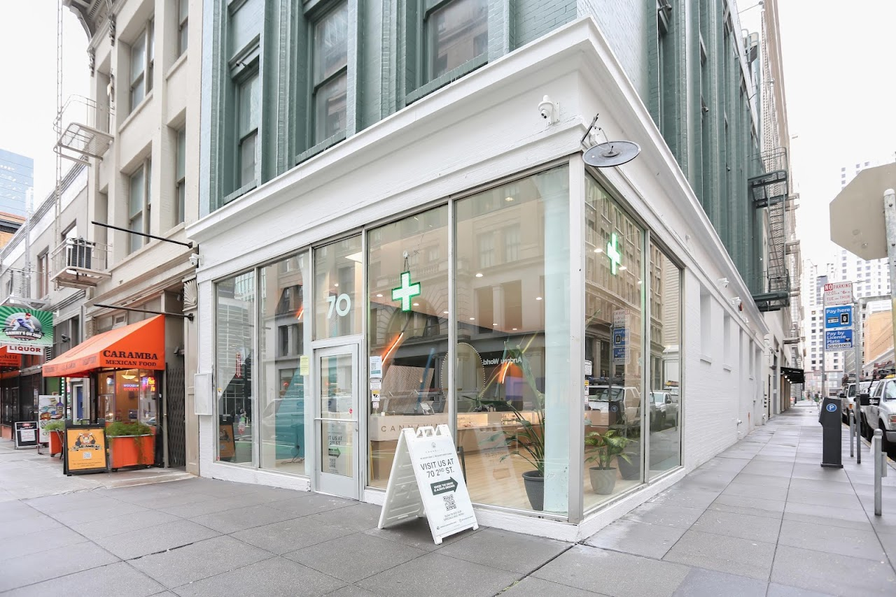
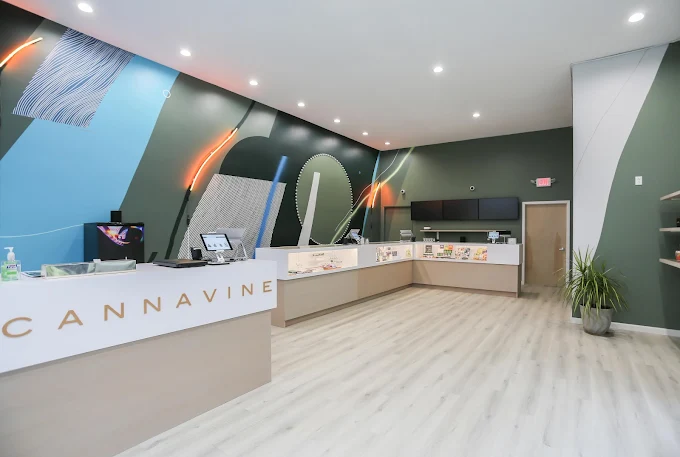
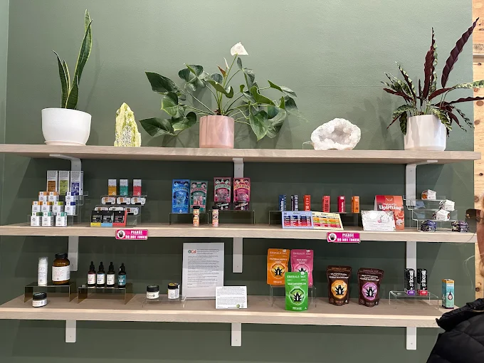

World-Class Environment
A polished retail space designed to feel clear, comfortable, and approachable from the moment you arrive.
San Francisco, California
An elevated cannabis destination where thoughtful hospitality, carefully selected products, and San Francisco's pioneering spirit come together.

A New Landmark in the Heart of the City
Cannavine sits at 70 2nd Street, close to SoMa, the Financial District, Mission Bay, Oracle Park, Yerba Buena Gardens, and the waterfront. Residents, commuters, visitors, artists, sports fans, and downtown workers all converge around this central address.
Nearby Muni, BART, Caltrain connections, I-80, and Highway 101 make the store an easy stop while moving through the city.
Browse the current menu
The Vision
Cannavine was built around the idea that cannabis retail can be welcoming, educational, beautifully designed, and deeply connected to its city.
A polished retail space designed to feel clear, comfortable, and approachable from the moment you arrive.
A selection focused on licensed California producers, quality, consistency, and useful choices across categories.
A modern experience inspired by the city's creative, unconventional, and forward-thinking culture.
Knowledgeable staff who listen, explain product differences, and help customers shop with confidence.
A neighborhood destination designed for regulars, first-time visitors, commuters, and travelers.

An Approachable Space for Everyone
The interior balances contemporary design with warmth and clarity. Questions are welcome, browsing is unhurried, and the team is ready to translate preferences into practical recommendations.
Clean displays and an organized menu make comparing formats and brands straightforward.
Staff can explain labels, product formats, potency, and use considerations at your pace.
A comfortable environment for experienced consumers, newcomers, residents, and visitors alike.
Community Rewards
Welcome savings, loyalty points, and rotating specials create more ways to explore the menu without sacrificing quality.
See Current DealsNew-customer offers make the first visit a chance to explore more of the menu.
Eligible purchases build rewards that can translate into savings on future visits.
Rotating product and category offers keep the experience fresh for regular customers.
Around San Francisco
These parks, districts, and waterfront destinations are convenient from 2nd Street. Cannabis consumption is limited to lawful private property, not these public spaces.
A downtown green space surrounded by museums, art, and modern architecture.
Wide paths, Bay views, and a breezy route near Oracle Park and Chase Center.
Waterfront food, architecture, transit, and Embarcadero access a short distance away.
Lakes, gardens, museums, meadows, and winding trails across the western city.
History, architecture, hiking routes, and scenic overlooks near the Golden Gate.
Open lawns, city views, and one of San Francisco's best-known neighborhood parks.
Made for the Modern City
A central address near SoMa, the Financial District, transit, and the waterfront.
Extensive customer feedback on service, atmosphere, and product guidance.
San Francisco, Belmont, Santa Rosa, and Ukiah.
Flower, pre-rolls, vapes, edibles, drinks, concentrates, and accessories.
Know Before You Go
Adults 21 and older need valid government-issued photo identification. Medical patients 18 and older should bring the documentation required under California law.
Yes, adults 21 and older with valid government-issued identification may shop. Cannabis cannot be transported across state lines.
Availability rotates across flower, pre-rolls, vapes, edibles, beverages, concentrates, tinctures, topicals, and accessories.
California generally permits adults 21 and older to purchase up to 28.5 grams of non-concentrated cannabis and up to 8 grams of concentrated cannabis per day. Medical limits can differ.
Payment availability can change. Review current store information or call before visiting if you need a particular method.
Use is restricted to lawful private property. Public consumption is not permitted in San Francisco parks, sidewalks, transit areas, or other public spaces.
A Pioneering City
San Francisco helped shape cannabis advocacy, education, and cultural normalization long before California's current legal retail market. Cannavine aims to honor that history through responsible, modern service.
The Cannavine Family
Find the same community-centered approach in San Francisco, Belmont, Santa Rosa, and Ukiah.
70 2nd Street
San Francisco, CA 94105
(415) 766-4372
1538 El Camino Real, Suite C
Belmont, CA 94002
(650) 639-9420
1831 Guerneville Road, Suite A
Santa Rosa, CA 95403
(707) 757-5426
1230 Airport Park Boulevard
Ukiah, CA 95482
(707) 621-9223
Local San Francisco Signals
Convenient from SoMa, the Financial District, Union Square, Yerba Buena, the Embarcadero, Mission Bay, and downtown transit connections.
70 2nd Street
San Francisco, CA 94105
Mon - Fri: 9 AM - 8:30 PM
Sat - Sun: 10 AM - 7 PM
Routes to Cannavine
Open turn-by-turn directions from nearby San Francisco businesses and landmarks.
Local Customer Feedback
“Christiana was super friendly, knowledgeable, and easy to talk to. She made the whole experience feel welcoming and never rushed me.”Bri Harrison Google review
“The staff was friendly and knowledgeable. The space was clean and well-organized, and nobody was pushy. They took the time to answer questions.”Camila de Souza Google review
“This experience was so nice. Moa was super helpful and explained everything since this was my first time coming here. I'll definitely be back!”Eddrena Hall Google review
Your Invitation to Explore
Discover a modern, welcoming cannabis destination at 70 2nd Street, where thoughtful guidance meets a carefully curated California menu.